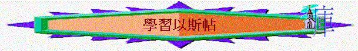

引言
想起以斯帖，你會想起什麼事？ 若在以色列人的歷史中沒有此女子，你猜想會有什麼後果？ 對我們今日信徒有什麼影響？
一.王后瓦實提
1.斯1:1交待了什麼背景? 亞哈隨魯王是那時代之王? 那時以色列人處於什麼情況?
2.1:2-4王做了什麼事情?
3.1:9-12 提到王后什麼事? 你猜想王后為何不來到王面前?
4.王為何發怒?
5.群臣又有什麼建議(1:13-19)? 為何要廢王后? 瓦實提最大的問題是什麼?
6.試分享你見過/猜想一些在眾人面前可以藐視丈夫的表現/行為?
二.以斯帖
1.平常生活
A. 2:1-4群臣又有什麼建議?
B.以斯帖是誰(2:6-7)?
C.2:8-15---又發生了什麼事? 以斯帖入了宮後,有什麼值得我們欣賞的地方? 你猜想為何她能得其他人喜悅?
D.後來她怎樣(2:16-17)?
E.你有沒有見過一些姊妹----有美好的特質,令人喜悅的?
2.面對危機
A.3:10-15又發生了什麼事? 有什麼危機?
B.末底改向以斯帖傳遞什麼要求(4:6-8)
C.以斯帖在初時又有什麼回應(4:10-12)? 她為何有此回應? 與她平時的性格有關嗎? 你若是以斯帖,你又會考慮/顧慮什麼事呢?
D.末底改又怎樣回應(3:13-14)?
E.以斯帖又有什麼回應(3:15-17)? 為何她叫人禁食? 禁食代表什麼事? 從她的回應,我們又欣賞她什麼事? 她自己也有禁食+她不是倚靠自己能力+她不是停留貪戀自己的名利+她肯勇敢改變+她肯捨命救同胞+她終順服
F.最近,神有沒有感動妳改變一些事/性格?
G.5:1-4 以斯帖如何向王請求? 為何她不立刻直接向王求取消禁令?
H.7:1-6 以斯帖又向王表達什麼事? 哈曼最終怎樣(7:10)
I. 8:3-9以斯帖又向王表達什麼事? 最終王怎樣回應?
J. 妳猜想為何她第一之見王時,她不立刻直接向王求取消禁令? 從中我們學習了什麼事情?
K. 試分享妳面對危機時,妳通常的處理方法? 妳認為自己在面對危機時最欠缺是什麼事?
總結:在今次查經中,你從以斯帖中,學到什麼功課?